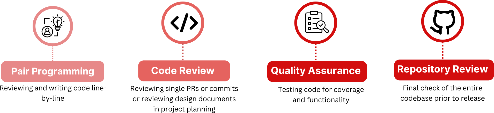

Introduction
Last updated on 2025-01-02 | Edit this page
Overview
Questions
- How can collaborative construction benefit a software project?
- How can collaborative construction benefit developers?
- What are some of the different types of code review?
Objectives
- Learn how to classify code review along different axes.
- Remember developers are people too!
Collaborative Construction
Who
Who is performing the review and whose work is being reviewed determines the point of a review. If a senior member is reviewing a pull request from an intern, they may want to provide feedback on style or help the intern understand the larger software system. Conversely, an intern may share a new language feature they just learned in college that the senior developer hadn’t known. Maybe a stakeholder is reviewing user stories to ensure the deliverable will satisfy their needs. The desired audience will affect how a review is performed, what kind of common language is available to a senior developer that a stakeholder may not understand?
What
What is being reviewed can also change what the collaborative construction is called. When reviewing single lines of code as they are written, this is usually called pair programming. Reviewing single PRs or commits is classified as code review. You can also review design documents in project planning. Checking test coverage may be called quality assurance and a final check of a repository prior to release is a repository review. 
When
When a review takes place is tightly
coupled to what is being reviewed, but not entirely. Consider discussing
a change to the underlying data structure in a program. Such a
recommendation could be easily considered during design but may be
impractical prior to release (especially if the code isn’t modular).
Keep in mind where in the project life cycle a review takes place. 
Why
Why a review happens can be for a variety of reasons. Maybe they are a rubber stamp you have to do before anything is merged. Maybe you really don’t know the best algorithm or library for an operation and want feedback from a colleague. Or perhaps you are a new contributor to a project and want to learn more about the fundamental systems in place. Usually code reviews take place to ensure changes to code are necessary and correct. An hour spent by a separate developer can save days or weeks of time tracking down a new bug or failing test. This is why large companies require reviews, but reviews can be beneficial to smaller teams that also contain novice developers. Some other benefits for reviewers can include: - Identifying bugs that the developer may have overlooked - Gauging how well the code satisfies requirements - Suggesting better designs, refactorings, or other improvements - Verifying that the code has sufficient test-automation
Pair Programming and Code Review
With such a vast range of possible topics, we will focus here on Pair Programming and Code Review at the level of a PR. Pair programming is working together, simultaneously with one person typing and the other providing guidance and feedback. Code Reviews of PRs are usually asynchronous and performed to ensure incoming code has a specific purpose and meets quality standards.
Mechanics and Methods
Code review requires two complementary skills: the mechanical actions of performing the review through github (or another version control system) and the soft skills of providing feedback.
It can be helpful to draw a comparison between code review and editing a scientific paper. The mechanics of editing a paper may require learning how to record changes, add comments or adjust references. What you say in those comments and what changes you suggest are part of the soft skills. Perhaps even more important is how you say it.
With software, we sometimes lose sight that there is no right or best answer. For any problem that is non-trivial, multiple solutions are viable and the choice between them requires balancing different trade offs often based on personal experience. There are many build systems for python. You may have a preference based on good or bad experiences you had in a prior project, but that doesn’t make it the correct decision. Again relating to editing a manuscript, you (probably) won’t say something like “you picked the wrong colors in this graph” or “you used this phrase incorrectly”. Even, in cases where factual errors are present, it’s more polite to focus on the writing instead of the writer. Recommendations provided with respect are more likely to be followed or at least considered.
What you decide to bring up in a review is personal, reflecting your background knowledge, project goals, and even your mood during the review. We can’t cover all possible things to review, just think of it as an exercise in copy-editing. You have some knowledge that will help the code get better and you need to share that in a way that will be received positively. We will have some details and guidance later, but try to approach reviews like you would prose, not a mechanical drawing or mathematical proof.
Developers are People Too
While you are writing code, you are ultimately producing instructions for the machine. You can be terse and uncaring because machines don’t have feelings. While you are writing reviews, you are providing feedback to a person. Remember they don’t know everything you do (and vice versa) and that doesn’t reflect on their value as a person, their intelligence or even their capabilities. Maybe a PR was made to meet a deadline and there wasn’t time to go back and refactor. Perhaps you have a decade of experience with python while they picked it up a year ago and are more comfortable with compiled languages. Maybe they are also handling a sick family member at home and are having trouble focusing. So before starting a review, remember to change your audience from computer to people.
Practically, follow these suggestions: - Criticize the code, not the coder. In general, avoid using “you”. Replace phrases like “you should have …” with “we should consider …”. In the latter version you are taking partial ownership (we) and providing a suggestion instead of a command. You can remove the subject entirely: “Consider …” or make a question “What about …”. In any case, you change focus from the actor, “you”, to the action. - Be polite. Instead of saying “It’s stupid to use this algorithm” give the reasons why an alternative would be better “When the sample size is above X, it would be more memory efficient to do Y.” - Let a style guide (or formatter) dictate style. There are no reasons to argue over line wrapping or tab stops. Decide on these early, setup CI and precommit to enforce them and spend your time doing more important things. - Give code examples, with context. Instead of saying “Use f-strings” provide a snippet of how the code will look. But also don’t just highlight the region and give the code! Remember sharing knowledge is an important part of reviews. Explain that f-strings are generally faster and easier to read. As a reviewee, don’t just accept code snippets. Make sure you understand what the new code does and why it may be a better option. This may require some independent research. - Give feedback, not commands. All of your feedback is optional and it’s helpful to the reviewee to have reviews written as such. Instead of “Rename this class to X” say “Can we rename this class to X? I think it…”. In the dialog that follows, the reviewee can say “No, because of …” or “Of course, that’s a great point.” You give them the option to say no without being confrontational. - Give praise. Reviews aren’t just about mistakes and nitpicks. If you see a clever algorithm or clean refactoring, say it! For teams you work with continually, recognize signs of improvement. - Make code better, not perfect. Highlighting and fixing a few issues is better than totally rewriting a PR and crushing a junior developers confidence. - Recognize stalemates. You don’t have to win every battle and reviewees don’t have to accept every recommendation. If you feel like a conversation is getting personal and no longer constructive, reach out to a third party for help or agree to disagree.
Summary
Collaborative Construction is a heterogeneous topic that is important throughout project lifetimes and has many different goals. The mechanics of reviews are separate from what to review. Think of code reviews like editing a manuscript to get into the right frame of mind and always remember the other developer is a person. Your relationship may last several years or just this PR, but they deserve respect and recognition.
In this module, we will cover pair programming and code review at the PR level. While pair programming is less often utilized, it allows you to experience providing guidance and feedback to a fellow developer without getting caught up with the mechanics of performing a review.
Key Points
- Reviews benefit a software project by fostering a sense of community, improving overall quality, and spreading knowledge of the codebase between developers.
- Reviews benefit developers by allowing them to learn new design patterns or language features, distilling knowledge throughout a team, and providing some socialization between members.
- Code reviews can range from immediate pair programming to post hoc repository reviews and everywhere in between. When developers say code review, they most often mean at the level of an individual pull request.